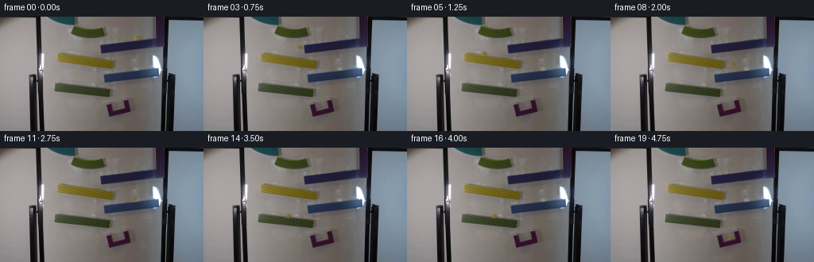
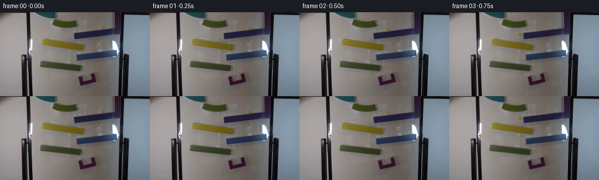

CODING AGENTS AS PIXEL WORLD MODELS
traex/GPT-6.1-Sol · 0107
点击播放 · 原生 RGB 像素
逐轮保存的候选
回放视频、检查图与代码变化。
每份候选均可单独播放。实际图片检查记录在下方工具轨迹中。
候选 01播放与检查图
点击播放 · 原生 RGB 像素


展开代码变化
--- 上一保存版本
+++ 本次保存版本
@@ -0,0 +1,167 @@
+"""Locked-off marble-run continuation, using source-image geometry and RGB sprites."""
+from pathlib import Path
+import numpy as np
+from PIL import Image
+from scipy.ndimage import map_coordinates, gaussian_filter
+from artifact_io import save
+
+ROOT = Path(__file__).resolve().parent
+H, W = 144, 256
+SOURCE = np.asarray(Image.open(ROOT / 'first_frame.png').convert('RGB'))
+
+
+def plate():
+ """Repair the released marble's original location from adjacent whiteboard/ramp."""
+ src = SOURCE.astype(np.float64)
+ yy, xx = np.mgrid[:H, :W]
+ donor = np.stack([map_coordinates(src[..., c], [yy + 12 * .147, xx - 12],
+ order=1, mode='nearest') for c in range(3)], axis=-1)
+ sample = (yy > 18) & (yy < 23) & (xx > 167) & (xx < 184)
+ donor += (src[sample] - donor[sample]).mean(axis=0)
+ weight = np.clip((8.0 - abs(xx - 174.5)) / 1.5, 0, 1)
+ weight *= np.clip((5.3 - abs(yy - 26.3)) / 1.2, 0, 1)
+ return np.clip(src * (1-weight[..., None]) + donor * weight[..., None], 0, 255)
+
+
+# Each track has a left end, right end, upper running surface at the left end,
+# and its measured image-plane inclination. Gravity projects onto that plane.
+TRACKS = [(128.0, 197.0, 36.37, -.147),
+ (73.0, 143.0, 45.8, .140),
+ (132.5, 198.0, 72.5, -.132),
+ (71.0, 138.0, 84.4, .124)]
+RADIUS = 3.0
+GRAVITY = 1900.0
+DT = .00025
+
+
+def surface(j, x):
+ left, right, height, slope = TRACKS[j]
+ return height + slope*(x-left) - RADIUS*np.sqrt(1+slope*slope)
+
+
+def simulate():
+ n = int(5.05/DT)+1
+ states = np.zeros((n, 4), np.float64)
+ x, y = 174.5, surface(0, 174.5)
+ vx, vy = 0., 0.
+ stage, mode = 0, 'track'
+ phase = 0.
+ for k in range(n):
+ t = k*DT
+ states[k] = [x, y, phase, float(mode == 'cup')]
+ oldx = x
+ if mode == 'track':
+ left, right, height, slope = TRACKS[stage]
+ vx += (5/7)*GRAVITY*slope/(1+slope*slope)*DT
+ x += vx*DT
+ y = surface(stage, x)
+ vy = vx*slope
+ if x < left or x > right:
+ mode = 'flight'
+ stage += 1
+ elif mode == 'flight':
+ vx *= np.exp(-.02*DT)
+ vy += GRAVITY*DT
+ x += vx*DT
+ y += vy*DT
+ if stage < len(TRACKS):
+ left, right, height, slope = TRACKS[stage]
+ if left-1 <= x <= right+1 and y >= surface(stage,x):
+ # Tangential momentum survives impact; normal velocity is
+ # absorbed by the plastic channel, not arbitrarily reversed.
+ vx = .78*(vx+slope*vy)/(1+slope*slope)
+ vy = vx*slope
+ y = surface(stage,x)
+ mode = 'track'
+ elif y >= 112.0:
+ tc, xc, yc = t, x, y
+ mode = 'cup'
+ else:
+ u = t-tc
+ x = 149.0+(xc-149.0)*np.exp(-9*u)
+ y = 114.8+(yc-114.8)*np.exp(-13*u)-1.25*np.sin(27*u)*np.exp(-10*u)
+ phase += (x-oldx)/RADIUS
+ return states
+
+
+def sphere_texture(bg):
+ """Reconstruct the existing yellow-glass optical texture, not a flat dot."""
+ yy, xx = np.mgrid[:H, :W]
+ radial = np.hypot(xx-174.5, yy-26.55)
+ edge = np.clip((3.35-radial)/.9, 0, 1)
+ # Measured blue absorption yields a naturally translucent edge.
+ deficiency = np.maximum(bg[...,2]-SOURCE[...,2],0)
+ opacity = np.clip(deficiency/73.,0, .96)
+ opacity = np.maximum(opacity, .10*edge)
+ opacity *= np.clip((4.0-radial)/.65,0,1)
+ fg = np.divide(SOURCE.astype(float)-bg*(1-opacity[...,None]),
+ np.maximum(opacity[...,None],.025))
+ fg = np.clip(fg,0,255)
+ # Outside the physical sphere neither image noise nor the stationary ramp
+ # texture is included in the moving foreground.
+ opacity[radial >= 4.] = 0
+ return opacity, fg
+
+
+def draw_marble(bg, alpha, fg, state):
+ cx, cy, phase, in_cup = state
+ # Local fourfold supersampling retains a round silhouette at subpixel positions.
+ s = 4
+ x0, x1 = max(0,int(np.floor(cx-7))), min(W,int(np.ceil(cx+8)))
+ y0, y1 = max(0,int(np.floor(cy-7))), min(H,int(np.ceil(cy+8)))
+ frame = bg.copy()
+ if x1<=x0 or y1<=y0:
+ return frame
+ yy, xx = np.mgrid[y0:y1:1/s,x0:x1:1/s]
+ xx += (1/s-1)/2
+ yy += (1/s-1)/2
+ current = np.stack([map_coordinates(bg[...,c],[yy,xx],order=1,mode='nearest')
+ for c in range(3)],axis=-1)
+ # Small diffuse board shadow, softened by the fixed studio illumination.
+ shadow = .105*np.exp(-((xx-cx-2.0)**2/6+(yy-cy-1.9)**2/4.5))
+ current *= 1-shadow[...,None]
+ u, v = xx-cx+174.5, yy-cy+26.55
+ a = map_coordinates(alpha,[v,u],order=1,mode='constant',cval=0)
+ color = np.stack([map_coordinates(fg[...,c],[v,u],order=1,mode='nearest')
+ for c in range(3)],axis=-1)
+ # Very subtle changing internal highlights from the rolling glass sphere.
+ z = np.clip(1-((xx-cx)**2+(yy-cy)**2)/(2.8**2),0,1)
+ sheen = .9*np.sin(phase*.7)*z
+ color += sheen[...,None]*np.array([1,.9,.35])
+ current = current*(1-a[...,None])+color*a[...,None]
+ if in_cup:
+ # The bottom front lip of the existing red catcher stays in front.
+ rim = (yy >= 117.0-.20*(xx-142.0)) & (xx>=141)&(xx<=160)
+ original = np.stack([map_coordinates(bg[...,c],[yy,xx],order=1,mode='nearest')
+ for c in range(3)],axis=-1)
+ current[rim] = original[rim]
+ current = current.reshape(y1-y0,s,x1-x0,s,3).mean(axis=(1,3))
+ frame[y0:y1,x0:x1] = current
+ return np.clip(frame,0,255)
+
+
+def main():
+ bg = plate()
+ alpha, fg = sphere_texture(bg)
+ trajectory = simulate()
+ frames = [SOURCE.copy()]
+ positions = []
+ for frame in range(1,20):
+ time = frame/4
+ # Short, constant shutter exposure; sampling does not change timing.
+ rendered = []
+ for offset in np.linspace(-.0045,.0045,5):
+ index = np.clip(int(round((time+offset)/DT)),0,len(trajectory)-1)
+ rendered.append(draw_marble(bg,alpha,fg,trajectory[index]))
+ frames.append(np.rint(np.mean(rendered,axis=0)).astype(np.uint8))
+ positions.append([time,*trajectory[int(round(time/DT))].tolist()])
+ frames = np.stack(frames)
+ assert np.array_equal(frames[0],SOURCE)
+ (ROOT/'.tmp').mkdir(exist_ok=True)
+ np.save(ROOT/'.tmp'/'trajectory.npy',np.array(positions))
+ Image.fromarray(np.rint(bg).astype(np.uint8)).save(ROOT/'.tmp'/'clean_plate.png')
+ save(frames, ROOT)
+
+
+if __name__ == '__main__':
+ main()
可观测工具轨迹
实际执行的命令与返回图片。
命令 1exit 0
/bin/bash -lc 'ls -la && cat prompt.txt && cat GENERATION_RULES.md'
命令 2exit 0
/bin/bash -lc "cat artifact_io.py && python - <<'PY'
from PIL import Image
import numpy as np
im=np.array(Image.open('first_frame.png'))
print(im.shape)
print('range',im.min((0,1)),im.max((0,1)))
# colors ascii hue distinct colored objects, black red blue green yellow and white/gray
r,g,b=im.astype(float).transpose(2,0,1)
sat=im.max(2)-im.min(2)
labels=np.full(im.shape[:2],'.',dtype='<U1')
labels[(r+g+b)/3<100]='K'
labels[(r+g+b)/3<45]='#'
labels[(r>g*1.25)&(r>b*1.2)&(sat>35)]='R'
labels[(g>r*1.15)&(g>b*1.12)&(sat>30)]='G'
labels[(b>r*1.15)&(b>g*1.05)&(sat>30)]='B'
labels[(r>b*1.35)&(g>b*1.2)&(abs(r-g)<90)&(sat>40)]='Y'
for y in range(0,144,2):
print(f'{y:03}', ''.join(labels[y,x] for x in range(0,256,2)))
Image.open('first_frame.png').save('.tmp/input.png')
PY"命令 3exit 0
/bin/bash -lc "python - <<'PY'
import numpy as np
from PIL import Image
im=np.array(Image.open('first_frame.png'))
for y in [0,4,8,12,16,20,24,28,30,32,36,40,44,48,52,56,64,68,72,80,84,88,92,96,100,108,116,124]:
print('\\ny',y)
print(' '.join(f'{x}:{\",\".join(map(str,im[y,x]))}' for x in range(60,196,8)))
# localized marble grid
print('\\nmarble pixels')
for y in range(20,32):
print(y,' '.join(f'{x}:{\",\".join(map(str,im[y,x]))}' for x in range(170,183)))
PY"命令 4exit 0
/bin/bash -lc "python - <<'PY'
import numpy as np
from PIL import Image
im=np.array(Image.open('first_frame.png'))
# brightness ASCII. absolute darkness takes priority. accent channel color print for each pixel
for y in range(0,35):
line=''
for x in range(45,140):
r,g,b=map(int,im[y,x]); m=max(r,g,b)-min(r,g,b)
if g-b>18 and r-b>15:
c='y' if r>g else 'g'
if max(r,g)>95: c=c.upper()
elif b>r+12 and g>r+10:c='c'
else:c=' .:-=+*#%@'[min(9,int((r+g+b)/3/256*10))]
line+=c
print(f'{y:02d} '+line)
PY"命令 5exit 0
/bin/bash -lc "python - <<'PY'
import numpy as np
from PIL import Image
im=np.array(Image.open('first_frame.png'))
# most saturated dark along ramps, identify starts/ends by columns
for reg,xs in [((20,48),range(124,201,4)),((42,66),range(68,149,4)),((62,85),range(129,204,4)),((80,103),range(67,143,4))]:
print('\\nREG',reg)
for x in xs:
vals=[]
for y in range(*reg):
r,g,b=map(int,im[y,x]);
if (max(r,g,b)-min(r,g,b)>22) and (min(r,g,b)<70):vals.append(y)
if vals:print(x, min(vals),max(vals),im[min(vals),x].tolist())
PY"命令 6exit 0
/bin/bash -lc "python - <<'PY'
from PIL import Image
import numpy as np
im=np.array(Image.open('first_frame.png'))
# detailed ascii green top hue. numbers correspond RGB amplitude and color
for y in range(8,30):
s=''
for x in range(85,140):
r,g,b=map(int,im[y,x]);
if g-b>18 and r-b>15:s+=('Y' if r>=g else 'G') if max(r,g)>95 else ('y' if r>=g else 'g')
elif b-r>12 and g-r>10:s+='C'
elif max(r,g,b)<75:s+='#'
elif max(r,g,b)<100:s+='-'
else:s+='.'
print(y,s)
print('color top', [(p,im[p[1],p[0]].tolist()) for p in [(93,14),(98,17),(108,18),(125,18),(131,19)]])
PY"命令 7exit 0
/bin/bash -lc "python - <<'PY' import importlib.util for m in ['cv2','scipy','numpy','PIL']: print(m, bool(importlib.util.find_spec(m))) PY"
命令 8exit 0
/bin/bash -lc "python - <<'PY'
import numpy as np
from PIL import Image
im=np.array(Image.open('first_frame.png'))
for y in range(102,127):
s=''
for x in range(132,173):
r,g,b=map(int,im[y,x]);
if r-g>15 and r-b>5:s+='R' if r>65 else 'r'
elif b-r>5:s+='p' if r<60 else '-'
elif min(r,g,b)<30:s+='#'
elif max(r,g,b)<75:s+=':'
elif max(r,g,b)<100:s+='o'
else:s+='.'
print(y,s)
PY"命令 9exit 0
/bin/bash -lc "cat > .tmp/test_motion.py <<'PY'
import numpy as np
G=1400.; R=2.9
ramps=[(128,197,36.8,-.147),(73,143.0,44.6,.140),(132.5,198,72.1,-.132),(71.0,138.0,84.0,.124)]
def h(j,x):
lo,hi,y,m=ramps[j];return y+m*(x-lo)-R*np.sqrt(1+m*m)
x=174.7;y=h(0,x);vx=0;vy=0;stage=0;mode='ramp';dt=.0002;acc=[];records=[]
for k in range(int(5/dt)+1):
t=k*dt
if k%1250==0:records.append((round(t,3),round(x,2),round(y,2),mode,stage))
if mode=='ramp':
lo,hi,yy,m=ramps[stage]
ax=5/7*G*m/(1+m*m)
vx+=ax*dt;x+=vx*dt;y=h(stage,x);vy=m*vx
if x<lo or x>hi:
print('exit',t,stage,x,y,vx,vy)
mode='fall';stage+=1
elif mode=='fall':
vx*=np.exp(-.02*dt);vy+=G*dt;x+=vx*dt;y+=vy*dt
if stage<len(ramps):
lo,hi,yy,m=ramps[stage]
if lo-1<=x<=hi+1 and y>=h(stage,x):
vx=(vx+m*vy)/(1+m*m)*.78;vy=m*vx;y=h(stage,x);mode='ramp'
print('land',t,stage,x,y,vx,vy)
elif y>=111.5:
print('cup',t,x,y,vx,vy);mode='cup';tc=t;xc=x;yc=y
elif mode=='cup':
u=t-tc
x=148.4+(xc-148.4)*np.exp(-u*9)
y=114.0+(yc-114.0)*np.exp(-u*13)-1.4*np.sin(u*27)*np.exp(-u*10)
for rec in records:print(rec)
PY
python .tmp/test_motion.py"命令 10exit 0
/bin/bash -lc "sed 's/G=1400./G=1800./' .tmp/test_motion.py > .tmp/test_motion2.py && python .tmp/test_motion2.py"
命令 11exit 0
/bin/bash -lc "python - <<'PY'
import numpy as np
from PIL import Image
im=np.array(Image.open('first_frame.png'))
for y in range(23,34):
print(y,' '.join('%3d/%3d/%3d'%tuple(im[y,x]) for x in range(162,185,2)))
PY"命令 12exit 0
/bin/bash -lc "python - <<'PY'
import numpy as np
from PIL import Image
im=np.array(Image.open('first_frame.png')).astype(int)
for x in [73,80,100,128,132,136,143,148,160,174,184,195]:
print('x',x)
for a,b,what in [(27,45,'b1'),(44,65,'y'),(65,83,'b3'),(82,102,'g')]:
arr=im[a:b,x]
if what[0]=='b':mask=(arr[:,2]-arr[:,0]>10)&(arr[:,2]-arr[:,1]>9)&(arr[:,0]<90)
elif what=='y':mask=(arr[:,0]-arr[:,2]>25)&(arr[:,1]-arr[:,2]>20)&(arr[:,2]<80)
else:mask=(arr[:,1]-arr[:,2]>18)&(arr[:,1]>arr[:,0]-5)&(arr[:,0]<110)
ix=np.where(mask)[0]+a
print(what,ix.tolist())
PY"命令 13exit 0
/bin/bash -lc "python - <<'PY'
import cv2,numpy as np
from PIL import Image
im=np.array(Image.open('first_frame.png'))
m=np.zeros(im.shape[:2],np.uint8)
cv2.ellipse(m,(174,26),(7,4),0,0,360,255,-1)
bg=cv2.inpaint(im,m,3,cv2.INPAINT_TELEA)
Image.fromarray(bg).save('.tmp/background_inpaint.png')
for y in range(23,32):
print(y,' '.join('%d,%d,%d'%tuple(bg[y,x]) for x in range(169,181)))
PY"命令 14exit 0
/bin/bash -lc "sed -e 's/G=1400.; R=2.9/G=1900.; R=3.1/' -e 's/36.8/36.43/' -e 's/44.6/45.8/' -e 's/72.1/72.5/' -e 's/84.0/84.4/' .tmp/test_motion.py > .tmp/test_motion3.py && python .tmp/test_motion3.py"
命令 15exit 0
/bin/bash -lc "python - <<'PY'
from PIL import Image
import numpy as np
from scipy.ndimage import map_coordinates
im=np.array(Image.open('first_frame.png')).astype(float)
y,x=np.mgrid[:144,:256]
# Donor to left over same slope
u=x-12;v=y+12*.147
s=np.stack([map_coordinates(im[:,:,c],[v,u],order=1,mode='nearest') for c in range(3)],-1)
# adjust board tone based sampling region around source and donor
board=(y>18)&(y<23)&(x>167)&(x<184)
corr=np.mean(im[board]-s[board],axis=0)
s+=corr
m=np.clip((8.0-np.abs(x-174.5))/1.5,0,1)*np.clip((5.3-np.abs(y-26.3))/1.2,0,1)
bg=im*(1-m[:,:,None])+s*m[:,:,None]
Image.fromarray(np.uint8(np.clip(bg,0,255))).save('.tmp/background.png')
for yy in range(24,32):
print(yy,' '.join('%d,%d,%d'%tuple(bg[yy,xx].astype(int)) for xx in range(169,181)))
PY"命令 16exit 0
/bin/bash -lc "cat > generate.py <<'PY'
\"\"\"Locked-off marble-run continuation, using source-image geometry and RGB sprites.\"\"\"
from pathlib import Path
import numpy as np
from PIL import Image
from scipy.ndimage import map_coordinates, gaussian_filter
from artifact_io import save
ROOT = Path(__file__).resolve().parent
H, W = 144, 256
SOURCE = np.asarray(Image.open(ROOT / 'first_frame.png').convert('RGB'))
def plate():
\"\"\"Repair the released marble's original location from adjacent whiteboard/ramp.\"\"\"
src = SOURCE.astype(np.float64)
yy, xx = np.mgrid[:H, :W]
donor = np.stack([map_coordinates(src[..., c], [yy + 12 * .147, xx - 12],
order=1, mode='nearest') for c in range(3)], axis=-1)
sample = (yy > 18) & (yy < 23) & (xx > 167) & (xx < 184)
donor += (src[sample] - donor[sample]).mean(axis=0)
weight = np.clip((8.0 - abs(xx - 174.5)) / 1.5, 0, 1)
weight *= np.clip((5.3 - abs(yy - 26.3)) / 1.2, 0, 1)
return np.clip(src * (1-weight[..., None]) + donor * weight[..., None], 0, 255)
# Each track has a left end, right end, upper running surface at the left end,
# and its measured image-plane inclination. Gravity projects onto that plane.
TRACKS = [(128.0, 197.0, 36.37, -.147),
(73.0, 143.0, 45.8, .140),
(132.5, 198.0, 72.5, -.132),
(71.0, 138.0, 84.4, .124)]
RADIUS = 3.0
GRAVITY = 1900.0
DT = .00025
def surface(j, x):
left, right, height, slope = TRACKS[j]
return height + slope*(x-left) - RADIUS*np.sqrt(1+slope*slope)
def simulate():
n = int(5.05/DT)+1
states = np.zeros((n, 4), np.float64)
x, y = 174.5, surface(0, 174.5)
vx, vy = 0., 0.
stage, mode = 0, 'track'
phase = 0.
for k in range(n):
t = k*DT
states[k] = [x, y, phase, float(mode == 'cup')]
oldx = x
if mode == 'track':
left, right, height, slope = TRACKS[stage]
vx += (5/7)*GRAVITY*slope/(1+slope*slope)*DT
x += vx*DT
y = surface(stage, x)
vy = vx*slope
if x < left or x > right:
mode = 'flight'
stage += 1
elif mode == 'flight':
vx *= np.exp(-.02*DT)
vy += GRAVITY*DT
x += vx*DT
y += vy*DT
if stage < len(TRACKS):
left, right, height, slope = TRACKS[stage]
if left-1 <= x <= right+1 and y >= surface(stage,x):
# Tangential momentum survives impact; normal velocity is
# absorbed by the plastic channel, not arbitrarily reversed.
vx = .78*(vx+slope*vy)/(1+slope*slope)
vy = vx*slope
y = surface(stage,x)
mode = 'track'
elif y >= 112.0:
tc, xc, yc = t, x, y
mode = 'cup'
else:
u = t-tc
x = 149.0+(xc-149.0)*np.exp(-9*u)
y = 114.8+(yc-114.8)*np.exp(-13*u)-1.25*np.sin(27*u)*np.exp(-10*u)
phase += (x-oldx)/RADIUS
return states
def sphere_texture(bg):
\"\"\"Reconstruct the existing yellow-glass optical texture, not a flat dot.\"\"\"
yy, xx = np.mgrid[:H, :W]
radial = np.hypot(xx-174.5, yy-26.55)
edge = np.clip((3.35-radial)/.9, 0, 1)
# Measured blue absorption yields a naturally translucent edge.
deficiency = np.maximum(bg[...,2]-SOURCE[...,2],0)
opacity = np.clip(deficiency/73.,0, .96)
opacity = np.maximum(opacity, .10*edge)
opacity *= np.clip((4.0-radial)/.65,0,1)
fg = np.divide(SOURCE.astype(float)-bg*(1-opacity[...,None]),
np.maximum(opacity[...,None],.025))
fg = np.clip(fg,0,255)
# Outside the physical sphere neither image noise nor the stationary ramp
# texture is included in the moving foreground.
opacity[radial >= 4.] = 0
return opacity, fg
def draw_marble(bg, alpha, fg, state):
cx, cy, phase, in_cup = state
# Local fourfold supersampling retains a round silhouette at subpixel positions.
s = 4
x0, x1 = max(0,int(np.floor(cx-7))), min(W,int(np.ceil(cx+8)))
y0, y1 = max(0,int(np.floor(cy-7))), min(H,int(np.ceil(cy+8)))
frame = bg.copy()
if x1<=x0 or y1<=y0:
return frame
yy, xx = np.mgrid[y0:y1:1/s,x0:x1:1/s]
xx += (1/s-1)/2
yy += (1/s-1)/2
current = np.stack([map_coordinates(bg[...,c],[yy,xx],order=1,mode='nearest')
for c in range(3)],axis=-1)
# Small diffuse board shadow, softened by the fixed studio illumination.
shadow = .105*np.exp(-((xx-cx-2.0)**2/6+(yy-cy-1.9)**2/4.5))
current *= 1-shadow[...,None]
u, v = xx-cx+174.5, yy-cy+26.55
a = map_coordinates(alpha,[v,u],order=1,mode='constant',cval=0)
color = np.stack([map_coordinates(fg[...,c],[v,u],order=1,mode='nearest')
for c in range(3)],axis=-1)
# Very subtle changing internal highlights from the rolling glass sphere.
z = np.clip(1-((xx-cx)**2+(yy-cy)**2)/(2.8**2),0,1)
sheen = .9*np.sin(phase*.7)*z
color += sheen[...,None]*np.array([1,.9,.35])
current = current*(1-a[...,None])+color*a[...,None]
if in_cup:
# The bottom front lip of the existing red catcher stays in front.
rim = (yy >= 117.0-.20*(xx-142.0)) & (xx>=141)&(xx<=160)
original = np.stack([map_coordinates(bg[...,c],[yy,xx],order=1,mode='nearest')
for c in range(3)],axis=-1)
current[rim] = original[rim]
current = current.reshape(y1-y0,s,x1-x0,s,3).mean(axis=(1,3))
frame[y0:y1,x0:x1] = current
return np.clip(frame,0,255)
def main():
bg = plate()
alpha, fg = sphere_texture(bg)
trajectory = simulate()
frames = [SOURCE.copy()]
positions = []
for frame in range(1,20):
time = frame/4
# Short, constant shutter exposure; sampling does not change timing.
rendered = []
for offset in np.linspace(-.0045,.0045,5):
index = np.clip(int(round((time+offset)/DT)),0,len(trajectory)-1)
rendered.append(draw_marble(bg,alpha,fg,trajectory[index]))
frames.append(np.rint(np.mean(rendered,axis=0)).astype(np.uint8))
positions.append([time,*trajectory[int(round(time/DT))].tolist()])
frames = np.stack(frames)
assert np.array_equal(frames[0],SOURCE)
(ROOT/'.tmp').mkdir(exist_ok=True)
np.save(ROOT/'.tmp'/'trajectory.npy',np.array(positions))
Image.fromarray(np.rint(bg).astype(np.uint8)).save(ROOT/'.tmp'/'clean_plate.png')
save(frames, ROOT)
if __name__ == '__main__':
main()
PY
python generate.py
python - <<'PY'
import numpy as np
from PIL import Image
p=np.load('.tmp/trajectory.npy')
for row in p: print(np.round(row,2))
a=np.array(Image.open('frames/01.png')); b=np.array(Image.open('first_frame.png'))
print('first equal',np.array_equal(np.array(Image.open('frames/00.png')),b))
print('frame 1 moved pixels',np.count_nonzero(np.any(a"'!=b,axis=-1)))
for n in [1,2,4,7,8,10,13,16,18,19]:
f=np.array(Image.open(f'"'frames/{n:02}.png'))
row=p[n-1];x=int(round(row[1]));y=int(round(row[2]));
print(n,'center',x,y, 'RGB',f[y,x].tolist(), 'colors',f[max(0,y-2):y+3,x-2:x+3,2].tolist())
PY"保存候选 1 份；完成命令 16 次；可验证图片返回 0 张。原始 API 响应与完整日志保留在本地。